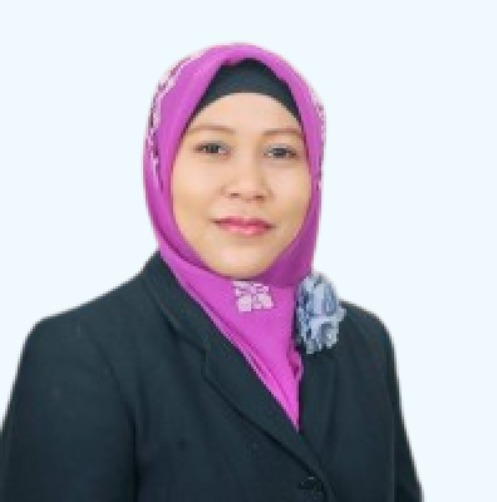

Tentang Web
Dosen Pembimbing
Dr. dr. Atien Nur Chamidah, M.Dis.St
Wakil Dekan bidang Akademik Kemahasiswaan Universitas Negeri Yogyakarta
Mahasiswa
Anisa Sri Rizky, S.Pd
Program Magister Pendidikan Luar Biasa
Universitas Negeri Yogyakarta
SIMDIKSUS (Sistem Informasi dan Identifikasi Anak Berkebutuhan Khusus) merupakan sebuah website yang dirancang sebagai referensi bagi guru sekolah dasar dalam menemu kenali dan memahami Anak Berkebutuhan Khusus (ABK), khususnya yang termasuk kategori high incident disabilities atau ABK yang umum ditemukan di kelas inklusif.
Platform web ini dikembangkan oleh Anisa Sri Rizky, S.Pd dengan developer yakni M Alif Gustav, S.Kom sebagai bagian dari penelitian untuk menyelesaikan Magister Pendidikan Luar Biasa di Universitas Negeri Yogyakarta. Adapun penelitian ini berada di bawah bimbingan Dr. dr. Atien Nur Chamidah, M.Dis.St.
Dengan dikembangkannya website ini, diharapkan dapat menjadi media pendukung yang memfasilitasi pemahaman awal dan penanganan Anak Berkebutuhan Khusus secara efektif dan efisien, khususnya pada kategori high incident disabilities atau ABK yang umum ditemukan di kelas inklusif.